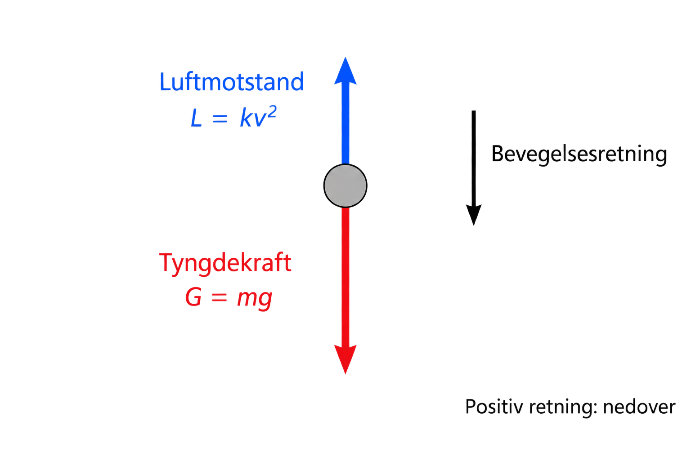

Bevegelse med varierende akselerasjon#
I mange virkelige situasjoner er akselerasjonen ikke konstant, men avhenger av farten. Et eksempel er et 100-metersløp. Da er akselerasjonen stor ved starten, men blir mindre og mindre etter hvert som farten nærmer seg toppfarten.
Akselerasjonen som en funksjon#
For å beskrive dette kan vi skrive akselerasjonen som en funksjon av farten, a(v). Vi definerer en funksjon med def, akkurat som når vi lager en funksjon i matematikk:
1def a(v): # akselerasjonen er en funksjon av farten
2 aks = -0.5*v + 6 # beregner akselerasjonen
3 return aks # returnerer akselerasjonen
Legg merke til at akselerasjonen er stor når farten er lav, og går mot null når farten nærmer seg en toppfart. Vi kan teste funksjonen for ulike verdier av v.
Når v = 0, blir akselerasjonen \(a(0) = -0,5\cdot 0+6=6\) m/s².
Når v = 10, blir akselerasjonen \(a(10) = -0,5\cdot 10+6=1\) m/s².
Når v = 12, blir akselerasjonen \(a(12) = -0,5\cdot 12+6=0\) m/s².
1print(a(0)) # akselerasjon ved v = 0 m/s
2print(a(10)) # akselerasjon ved v = 10 m/s
3print(a(12)) # akselerasjon ved v = 12 m/s
Dette vil gi følgende utskrift:
6.0
1.0
0.0
Utforsk 1#
Regn selv ut a(2.5) ved å sette v = 2.5 inn i formelen aks = -0.5*v + 6. Test deretter i koden om du fikk rett, og prøv deg fram med ulike verdier for v for å finne ved hvilken fart akselerasjonen blir 2.
while s < s_slutt#
I dette programmet er vi ikke interessert i å stoppe etter en gitt tid, men når løperen har tilbakelagt 100 meter. Da bruker vi betingelsen s < s_slutt i stedet for t < t_slutt. Inni løkka bruker vi funksjonen a(v) til å regne ut akselerasjonen som passer til farten akkurat da:
1while s < s_slutt: # etter 100 m er løpet over
2 v = v + a(v)*dt # beregner ny fart
3 s = s + v*dt # beregner ny posisjon
4 t = t + dt # øker tiden med dt
5 s_verdier.append(s) # legger s inn i posisjonslisten
6 v_verdier.append(v) # legger v inn i fartslisten
Prøv å kjøre hele programmet under. Det tegner en v–s-graf som viser hvordan farten øker raskt i starten, og deretter flater ut mot en toppfart etter hvert som løperen nærmer seg 100 meter.
Underveisoppgave 1#
En fallskjermhopper hopper ut fra et fly. Ved starten er akselerasjonen \(a = g = 9,81\) m/s². Positiv retning er nedover.
Definer en funksjon a(v) hvor akselerasjonen avtar med \(v^2\). Bruk modellen \(a(v) = 9,81-v^2\), der tallverdien til v oppgis i m/s og funksjonsverdien er i m/s².
1def a(v):
2 aks = 9.81 - v**2
3 return aks
Bruk funksjonen du fant i forrige oppgave, og tegn posisjonsgrafen for de første 1500 meterne.
1import matplotlib.pyplot as plt
2
3s = 0
4v = 0
5t = 0
6
7s_slutt = 1500
8dt = 0.01
9s_verdier = [s]
10t_verdier = [t]
11
12def a(v):
13 aks = 9.81 - v**2
14 return aks
15
16while s < s_slutt:
17 v = v + a(v)*dt
18 s = s + v*dt
19 t = t + dt
20 s_verdier.append(s)
21 t_verdier.append(t)
22
23plt.plot(t_verdier, s_verdier)
24plt.title("Posisjon som funksjon av tid")
25plt.xlabel("$t$ (s)")
26plt.ylabel("$s$ (m)")
27plt.grid()
28plt.show()
Tegn akselerasjon–tid-grafen for de første 1500 meterne.
1import matplotlib.pyplot as plt
2
3s = 0
4v = 0
5t = 0
6
7s_slutt = 1500
8dt = 0.01
9
10def a(v):
11 aks = 9.81 - v**2
12 return aks
13
14t_verdier = [t]
15a_verdier = [a(v)]
16
17while s < s_slutt:
18 v = v + a(v)*dt
19 s = s + v*dt
20 t = t + dt
21 t_verdier.append(t)
22 a_verdier.append(a(v))
23
24plt.plot(t_verdier, a_verdier)
25plt.title("Akselerasjon som funksjon av tid")
26plt.xlabel("$t$ (s)")
27plt.ylabel("$a$ (m/s²)")
28plt.grid()
29plt.show()
Vi lager en akselerasjonsfunksjon for luftmotstand#
Vi ønsker å finne akselerasjonen til en gjenstand som faller med luftmotstand. Vi velger positiv retning nedover.
Når gjenstanden faller, og positiv retning er nedover, virker tyngdekraften nedover og luftmotstanden oppover. Tyngdekraften er \(G = mg\), og luftmotstanden er \(L = kv^2\).
Konstanten \(k\) bestemmer hvor stor luftmotstanden er ved en gitt fart. Den avhenger blant annet av gjenstandens form, tverrsnittsareal og luftas tetthet. I fysikk 1 er den bare oppgitt som et tall.
Siden nedover er positiv retning, får tyngdekraften positivt fortegn og luftmotstanden negativt fortegn. Newtons andre lov gir da
Vi deler på massen og får uttrykket som brukes i funksjonen:


For en gjenstand som slippes fra ro, er luftmotstanden null i starten. Da er akselerasjonen lik $g$. Etter hvert som farten øker, øker luftmotstanden og akselerasjonen blir mindre.
Når luftmotstanden er like stor som tyngdekraften, får vi
Da faller gjenstanden med konstant fart, kalt terminalfart. Null akselerasjon betyr ikke at gjenstanden står stille, men at farten ikke endrer seg.
Definere akselerasjonsfunksjon med luftmostand#
1# Funksjon for å beregne akselerasjon
2def aks(m, g, k, v):
3 a = (m*g - k*v**2)/m
4 return a
Parameter |
Betydning |
Enhet |
|---|---|---|
|
Gjenstandens masse |
kg |
|
Tyngdeakselerasjonen |
m/s² |
|
Konstanten i luftmotstandsmodellen |
kg/m |
|
Gjenstandens fart nedover |
m/s |
Funksjonen beregner bare akselerasjonen. Den oppdaterer ikke farten eller posisjonen, og den skriver ikke ut svaret med mindre vi bruker print().
Eksempel 1#
En gjenstand har massen \(2,0\) kg og farten \(10,0\) m/s nedover. Vi setter tyngdeakselerasjonen til \(9,81\) m/s² og luftmotstandskonstanten til \(0,10\) kg/m.
1def aks(m, g, k, v):
2 a = (m*g - k*v**2)/m
3 return a
4
5a = aks(2.0, 9.81, 0.10, 10.0)
6print("Akselerasjonen er", round(a, 2), "m/s²")
Programmet skriver ut:
Akselerasjonen er 4.81 m/s²
Beregningen er
Akselerasjonen er positiv, altså rettet nedover. Gjenstanden øker derfor farten nedover i dette øyeblikket.